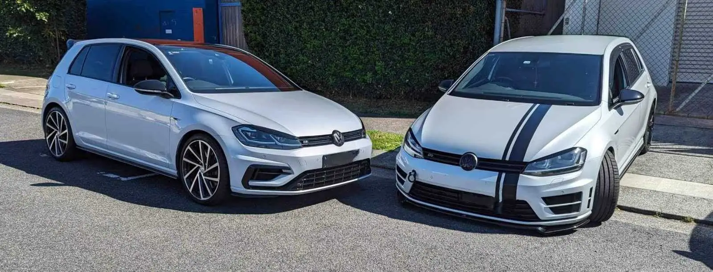
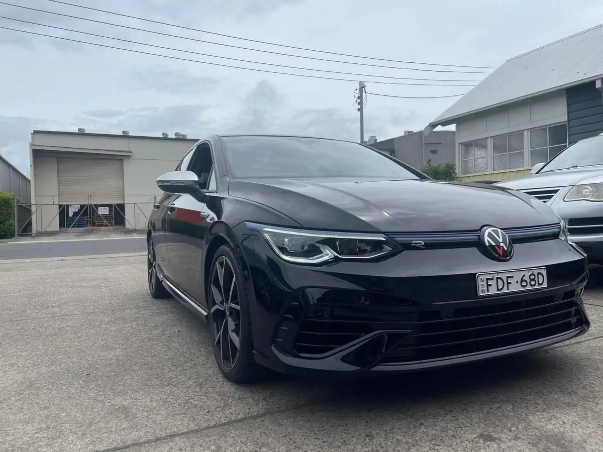
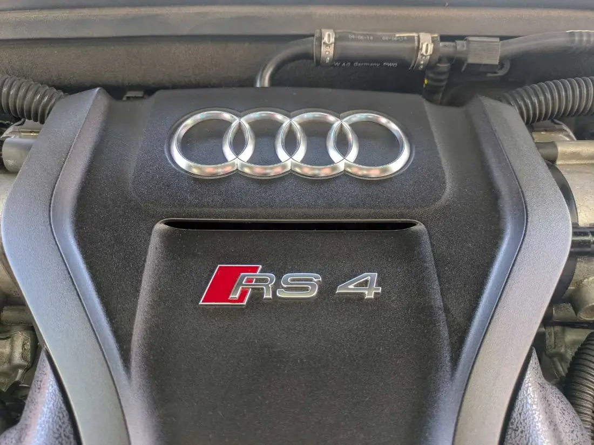
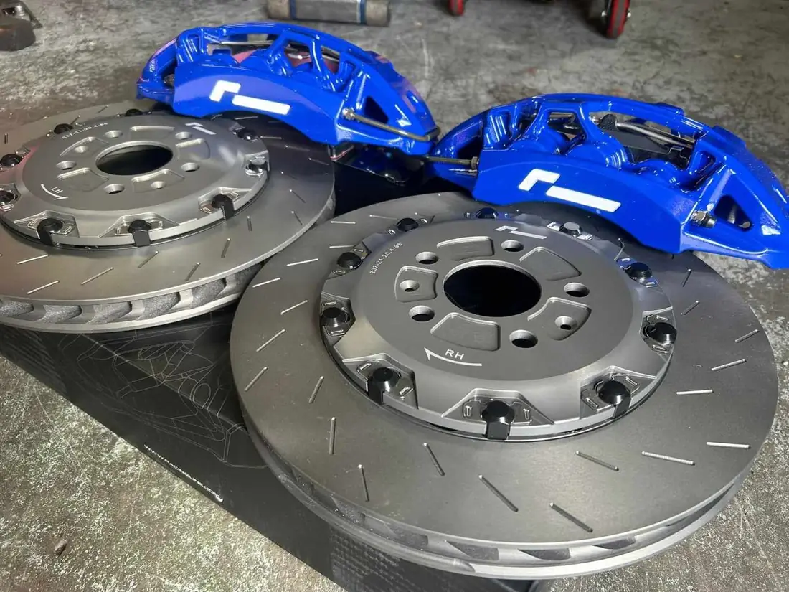
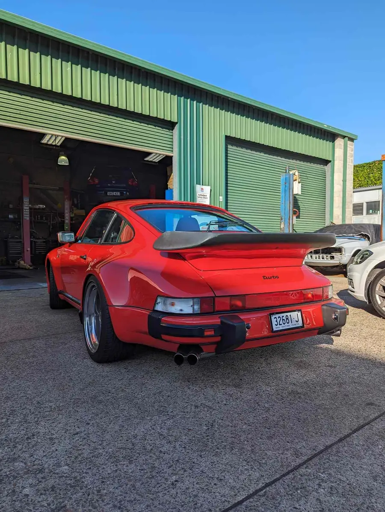
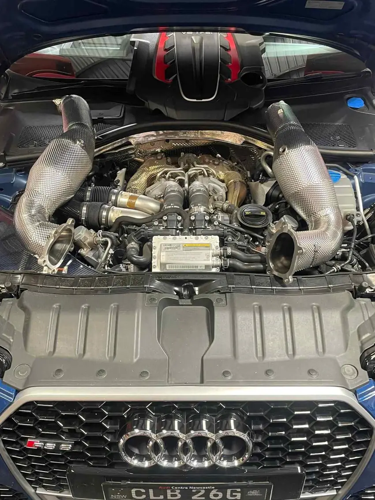
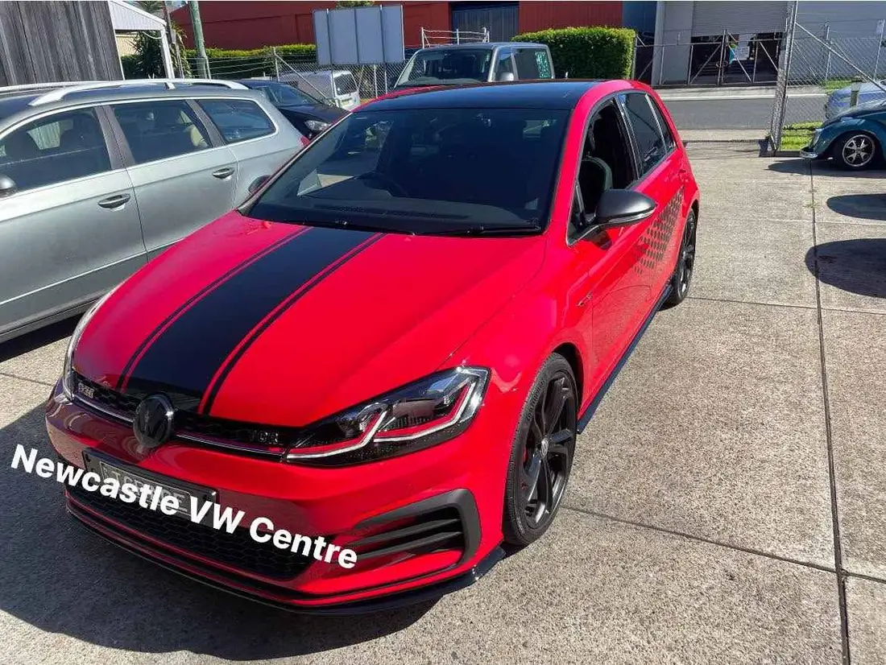
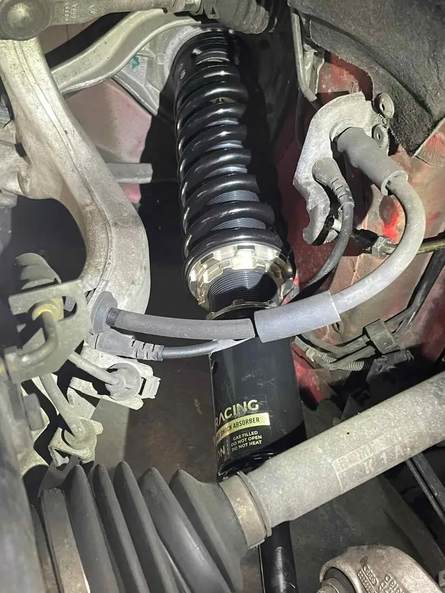
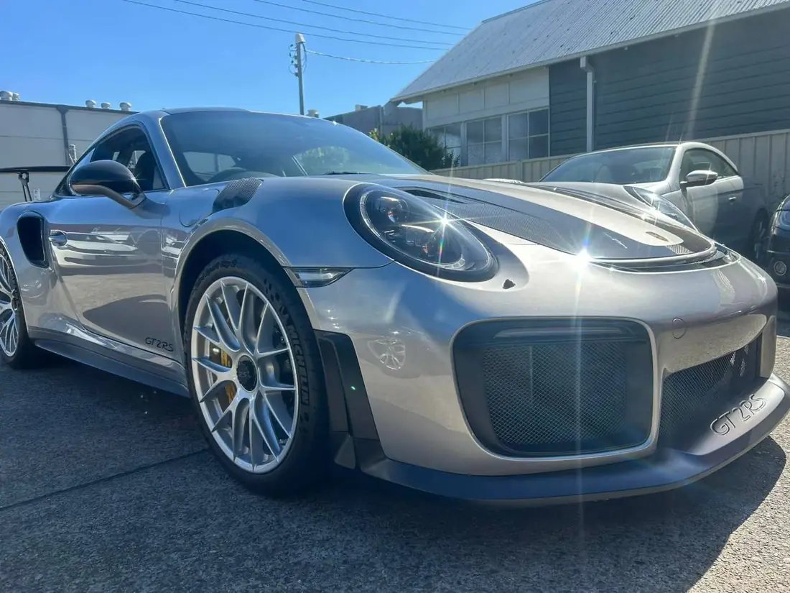

“Pete is a no-nonsense guy, but is genuine and trustworthy and his pricing for servicing and labour for repairs is realistic and sensible… when you pick up your car, you are talking to the guys who did the work which is always reassuring.”

4.874 Google reviews
Dealer know‑how.Withoutthe dealer.
Independent servicing, repairs and performance tuning for Volkswagen, Audi, Skoda and Porsche — at 15 Lindus St, Wickham.
What we do
A VW Group workshop where you speak to the people who actually worked on your car. Pete, Shane and Anthony know these cars inside out.
Logbook servicing
Scheduled servicing to the manufacturer’s logbook, with oil, filters and checks for your exact model.

Diagnostics & electrical
Warning lights, fault codes and electrical gremlins traced and cleared — properly.

Mechanical repairs
Timing belts, water pumps, brakes, steering, suspension and transmission work.

Performance tuning
Software, brakes, exhausts and suspension from APR, RacingLine and Unitronics.

In the workshop
From daily-driver Golfs to classic 911s — a few cars that came through Lindus St recently.





More power, done right
Tuning with the names VW Group owners trust, fitted and set up by the same team that services the car.
4.8
74 Google reviews
The same words keep coming up: honest, no-nonsense, fair on price. Read what drivers say in their own words.
1 / 6
“Looked after my wife’s transporter. Half the price of VW and easily twice as good… Saved me a fortune and made nothing from it themselves. They know their stuff.”
“Both Anthony and Shane were extremely polite and helpful to resolve an electonics issue in my Touareg as kust a drop-in off the street… Thanks guys, you have an awesome VW repair centre!!”
“Called Newcastle VW centre and explained my situation they said bring it straight down. Pulled into the yard they had the laptop ready to go… Thanks to these guys I finished the 7000km trip without having to worry about any issues.”
“I got my VW towed to Pete's shop & had it fixed for a fraction of the price the other guy quoted me. Genuine, excellent service, affordable pricing & honest. Highly recommended.”
“They kept my car for days and couldn't clear it. These guys cleared the warning in no time and were super nice to me. Highly recommend them.”
Find the workshop
Mon–Fri 8 am – 5 pm
- 15 Lindus St, Wickham NSW 2293
Near Wickham station, inner Newcastle - (02) 4927 6689
Workshop - 0405 366 748
Mobile - newcastle@cvwc.com.au
| Monday | 8 am – 5 pm |
| Tuesday | 8 am – 5 pm |
| Wednesday | 8 am – 5 pm |
| Thursday | 8 am – 5 pm |
| Friday | 8 am – 5 pm |
| Saturday | Closed |
| Sunday | Closed |